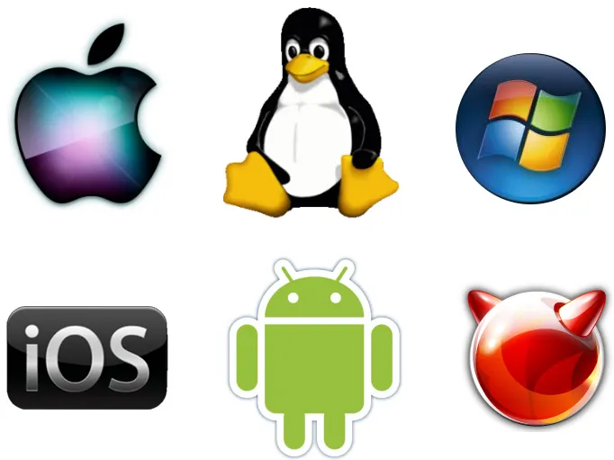

Practical Schooling System
Operating System
Process management,Memory management,File management,Device management,User interface,Security and access control,Resource management,Networking,Error detection and handling
Process management – Runs and controls programs, schedules CPU time, and supports multitasking.
CPU
File management – Creates, stores, organizes, retrieves, and deletes files and folders.
Device management – Controls hardware such as keyboards, printers, disks, and displays through device drivers.
User interface – Provides a way for users to interact with the computer, such as a graphical interface (GUI) or command line (CLI).(GUI)(CLI)
Security and access control – Manages user accounts, permissions, authentication, and protection of system resources.
Resource management – Distributes CPU, memory, storage, and other resources among applications.
Networking – Enables communication with other computers and manages network connections.
Error detection and handling – Detects hardware/software errors and helps keep the system stable.
- Function Example:
- Process Management: Running Chrome and Word at the same time.
- Memory Management: Giving RAM to a game when it starts.
- File Management: Creating, copying, renaming, and deleting files.
- Device Management: Controlling a printer or keyboard
- User Interface Windows desktop, icons, and menus.
- Security: Passwords and user permissions.
- Resource Management: Sharing CPU power between different programs.
- Networking: Connecting your computer to Wi-Fi
- Error Handling: Showing an error message when a program crashes.
When you open Game, the OS gives CPU, Game RAM, storage, and access to your keyboard/mouse
- Computer
- Mathematics
- English
- Nested
- Twisted
- Shield Tw
- Computer Subject

- Examples of Operating Systems
- Windows:Used on computers and laptops.
- Linux:An open-source operating system.
- MacOs:Used on Apple Msc computers.
- Android:Used on smartphones and tablets.
- IOS:Used on Apple IPhones.
- ChromeOS:Used on Chrome Books.
- FreeBSD: FreeBSD is a free, open-source operating system based on Unix that is used to run servers, computers, and other systems.
Minimum Requirement for windows 10
| Component |
Requirement |
| Processor |
1 GHz |
| Memory |
1 GB |
| Storage |
32 GB |
| Display |
800x600 Reolution |
| Graphic Cards |
DirectX 9 or later |